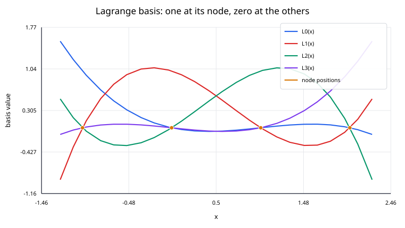
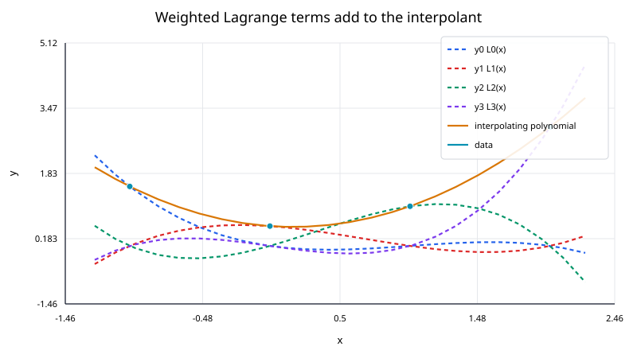

Lagrange interpolation constructs the unique polynomial of degree at most $n$ that passes through $n+1$ distinct data points.
For nodes
$$ (x_0,y_0),\ldots,(x_n,y_n), $$
the interpolating polynomial is written as
$$ p_n(x) = \sum_{j=0}^{n}y_jL_j(x), $$
where each $L_j(x)$ is a Lagrange basis polynomial.
The basis functions are designed so that
$$ L_j(x_i) = \begin{cases} 1,& i=j,\\ 0,& i\ne j. \end{cases} $$
That property makes the interpolation condition automatic.

For distinct nodes, define
$$ L_j(x) = \prod_{\substack{m=0\\m\ne j}}^{n} \frac{x-x_m}{x_j-x_m}. $$
At $x=x_j$, every factor equals one, so
$$ L_j(x_j) = 1. $$
At any other node $x_i$, one numerator factor becomes
$$ x_i - x_i = 0, $$
so
$$ L_j(x_i) = 0 \qquad \text{for }i\ne j. $$
Now evaluate
$$ p_n(x) = \sum_{j=0}^{n}y_jL_j(x) $$
at a data node $x_i$:
$$ p_n(x_i) = \sum_{j=0}^{n}y_jL_j(x_i) = y_i. $$
This proves that the polynomial interpolates every supplied value.
Each term
$$ y_jL_j(x) $$
contributes a polynomial that has the correct value $y_j$ at one node and vanishes at all the others. Adding the terms combines those local interpolation constraints into one global polynomial.

Although the basis functions are tied to individual nodes, the final polynomial is global. Changing one node or data value generally changes the polynomial everywhere.
Interpolate the three points
$$ (0,1), \qquad(1,3), \qquad(2,2). $$
The basis polynomials are
$$ L_0(x) = \frac{(x-1)(x-2)}{(0-1)(0-2)} = \frac{(x-1)(x-2)}{2}, $$
$$ L_1(x) = \frac{x(x-2)}{(1-0)(1-2)} = -x(x - 2), $$
and
$$ L_2(x) = \frac{x(x-1)}{(2-0)(2-1)} = \frac{x(x-1)}{2}. $$
Therefore,
$$ p(x) = 1L_0(x) + 3L_1(x) + 2L_2(x). $$
After simplification,
$$ p(x) = -\frac{3}{2}x^2 + \frac{7}{2}x + 1 $$
At $x=1.5$,
$$ p(1.5) = -\frac{3}{2}(1.5)^2 + \frac{7}{2}(1.5) + 1 = 2.875 $$
Thus
$$ \boxed{p(1.5)=2.875}. $$
The polynomial also satisfies
$$ p(0) = 1, \qquad p(1) = 3, \qquad p(2) = 2. $$
The formula for one $L_j$ contains $n$ factors, and there are $n+1$ basis polynomials. A literal implementation therefore requires $O(n^2)$ work for one query.
That direct formula is excellent for derivation but is not usually the best way to evaluate a large interpolant numerically.
A more efficient and numerically useful representation uses barycentric weights
$$ w_j = \frac{1} {\displaystyle\prod_{\substack{m=0\\m\ne j}}^{n}(x_j-x_m)}. $$
For a query $x$ that is not exactly one of the nodes,
$$ p_n(x) = \frac{ \displaystyle\sum_{j=0}^{n}\frac{w_jy_j}{x-x_j} }{ \displaystyle\sum_{j=0}^{n}\frac{w_j}{x-x_j} }. $$
The weights depend only on the node locations, so they can be precomputed once. After that, one scalar query costs $O(n)$.
If $x=x_k$ exactly, the correct value is simply
$$ p_n(x_k) = y_k. $$
An implementation should detect this case rather than evaluate a formula containing division by zero.
The same polynomial can be written in monomial form:
$$ p_n(x) = a_0 + a_1x + \cdots + a_nx^n. $$
Matching the data gives a Vandermonde system. In exact arithmetic this is valid, but a monomial Vandermonde matrix can be badly conditioned, especially for high degrees or poorly scaled nodes.
Lagrange or Newton forms expose the interpolation structure directly and usually lead to better algorithms.
If the unknown function $f$ has $n+1$ continuous derivatives, then
$$ f(x) - p_n(x) = \frac{f^{(n+1)}(\xi_x)}{(n+1)!} \prod_{i=0}^{n}(x - x_i) $$
for some $\xi_x$ in the relevant interval.
The product shows that the error is zero at every interpolation node. It also shows why node placement matters between the nodes.
Increasing the polynomial degree does not always improve interpolation on equally spaced points.
For functions with substantial curvature near an interval boundary, a high-degree polynomial through equally spaced nodes can develop large endpoint oscillations. This behavior is known as the Runge phenomenon.
Possible remedies include:
A practical implementation should verify:
Lagrange interpolation is especially useful for:
If nodes are added one at a time, Newton form is often more convenient because its coefficient table can be extended incrementally.